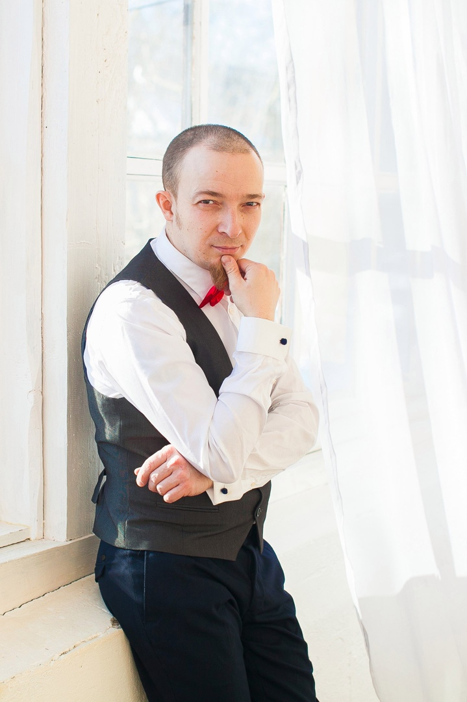

Matveev Andrey Viktorovich
Male, 42, born July 19, 1978
+7 (950) 6866497 whatsapp, telegram
andy_matveev@mail.ru
Residence: Veliky Novgorod
Programmer, WEB Developer, Web Developer.
Linux administrator
Information technology, internet, telecom
Programming, Development
Web engineer
Web master
Employment: project work, internship, part-time, full-time
Work schedule: remote work, full day
Desired travel time to work: Doesn't matter
Work experience - 19 years 5 months
March 2016 - present time
3 years 3 months
Private practice / freelance
Web developer
Development of web sites.
Small orders for pages - business cards. CMS Wordpress GRAV (https://getgrav.org)
Modification of templates (SCC, PHP, HTML, YAML)
November 2014 - March 2016
1 year 5 months
Ikea
Logistics officer
Logistics department employee. Order picking.
November 2012 - November 2014
>
2 years 1 month
ProDivingClub
Administrator
Diving center management, country base.
Club administrator. Managing his work, organizing trips, process
practical training in a country base (+ diving with difficult students, work with
fears) Development of a system for automatic registration of country visitors
bases (registration, finance, rental equipment) MYSQL Apache Web interface. Role
- system design, development management. At the time of development, organized
accounting by means of spreadsheets and a protocol of personnel actions. Escort
the previous version of the site, ensuring an increase in the search results on the topic of diving.
The total number of subordinates is up to 20 (the staff is not permanent).
partially. The result is the systematization of the collection of information. Getting statistics for
analysis. Development of a process optimization plan. Improving the reputation of the club,
increasing
the profitability of the work of the suburban base by 60%. Organization and filming
advertising videos for the club, editing videos based on materials from foreign and local
travel club.
Organization of media coverage of the descent process of the underwater house. (federal
TV channels, regional print media).March 2009 - November 2012
3 years 9 months
2007 — March 2009
2 years 1 month
Book systems LLC (Bukvoed)
System Administrator
Network administration, Windows, Linux. User support.
Design, installation and management of network infrastructure (Win, Linux) office and
shops. SCS implementation in office and shops. Protocol development and automation
the process of hiring a new employee and dismissal (In the context of IT. Creation,
deleting credentials, user profiles, typical configuration
automated workplaces, obtaining job descriptions, initial
information security briefings, transfer of cases upon dismissal) At the time
the system was partially implemented. Result - exclusion of the situation of occurrence
"Dead souls" after the dismissal of employees. A quick introduction to new affairs
employees, almost complete exclusion of the likelihood of unauthorized access to
confidential data due to negligence.
Role-developer systems engineering, development coordination - implementation, writing
instructions and training of employees involved in the process.
October 2004 - March 2007
2 years 6 months
Corus Consulting LLC
Helpdesk Specialist
Maintenance of implemented projects, correction of errors, improvements.
ERP Axapta. Developer Axapta (MS SQL, C ++ like internal language
Axapta programming). Development of new functionality, adaptation of ready-made
modules in accordance with the requirements of Russian accounting. Functionality development
for time tracking in the context of work on projects, for internal use
in the department (implemented).
2000 - October 2004
4 years 10 months
SPB GTU FTK AIVT TKTs
Saint-developer Petersburg
Lead developer
Software development, testing, WIN, UNIX.
Work on the project of the Russian Navy. Hydroacoustic automatic software developer
hardware complex.
Development of software modules. Kylix (delphi). Development of a protocol between hardware
module and software module (delphi, C ++). (Software Testing
operator's workplace. Development and writing of technical documentation for the complex,
writing a user manual and teaching materials for hydroacoustic
complex. Linux OS.Building a faculty network infrastructure, network administration, maintenance
network equipment, workstations in display classrooms. (Win, Linux).
Higher
2003
St. Petersburg State Technical University,Saint Petersburg
Technical Cybernetics, Systems Engineer
Thesis topic: Universal analyzer LOG files, controlled by
language for describing data structures, goals and actions. The result is a working prototype
programs. A description language and a language interpreter have been developed. Implemented in
Perl. Linux.
Key skills
System analysis of the task, development of systems architecture, interface logic,
writing reference manuals, instructions, guidelines. Object
oriented programming. Basic knowledge of C, C ++, Pascal (object pascal) SCC,
HTML, Php, Perl, SQL. Editing video, working with graphics (editing and creating
images). Rapid learning to new skills and technologies. Ability
autonomous work.
Knowledge of languages
Russian - Native
English - Technical (conversational at the household level)
About me
Diving, auto, travel, IT